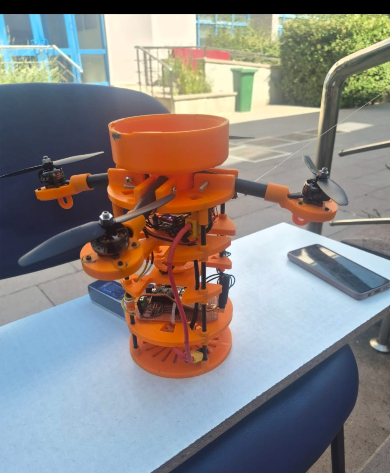
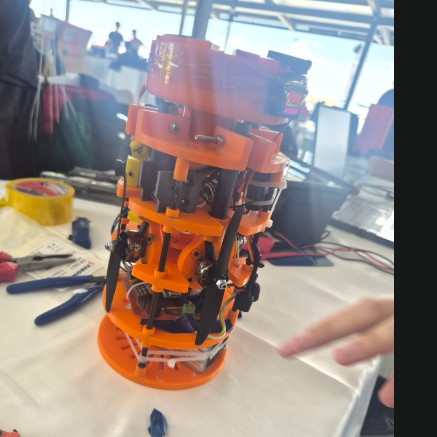

Hidrosphere | Model Uydu Projesi
11. TÜRKSAT Model Uydu Yarışması bizim için tasarım, test, takım çalışması ve yarışma deneyimi demekti.
Yarışma sonucumuz
| Yarışma | Takım | Sonuç |
|---|---|---|
| 11. TÜRKSAT Model Uydu Yarışması | Hidrosphere | 10. olduk! |
Prototipimizden fotoğraflar
Bu bölümde kişisel fotoğraflar yerine yaptığımız sistemin fotoğrafları var.


Neler öğrendik?
- Farklı mekanik ve elektronik parçaları tek sistemde buluşturmayı
- Montaj ve test sırasında sorun çözmeyi
- Takım içinde iş bölümü ve zaman planlaması yapmayı
- Yarışma ortamında birlikte çalışmayı
Yarışma anılarım ve fotoğraflarım